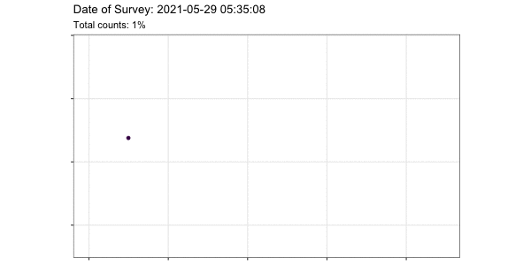
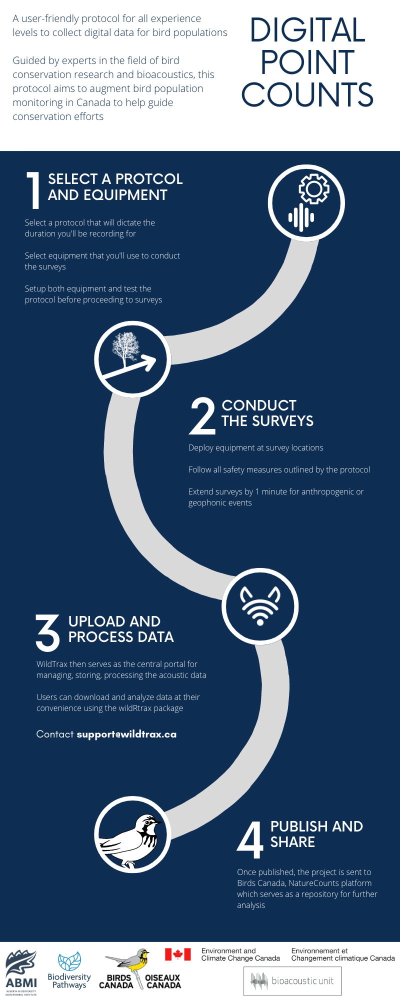

Home
Welcome to the protocol for conducting a digital point count using an autonomous recording unit or hand-held recording device.
In collaboration with a multitude of partners, this user-friendly protocol aims to establish a standard method for collecting data on bird populations in a digital format, making it accessible and easy for citizen scientists to collect and contribute to avian research and population monitoring.

The use of autonomous recording units (ARUs) and hand-held recording devices in avian point counts, in partnership with leading avian research organizations, provides a standardized protocol for data collection that ensures consistency and comparability of results following established guidelines. The data is collected in a digital format, which makes it easily accessible and shareable among researchers from various organizations, but also archiveable and produces data that can be verified. Citizen scientists can participate in avian research, regardless of prior experience or expertise, and contribute to scientific knowledge. The program is designed to be user-friendly, for all skill levels, with support and guidance from experts.
News
This site is currently under construction in preparation for the 2023 field season
- 04-30-23: Initial publication
The Basics
1) Select a protocol and equipment
- Select a recorder model and prepare equipment
- Select a recording method, either segmented or continuous, and a point count protocol
2) Conduct the surveys
3) Upload and process the data
- Upload the recordings for standardization’*’
- Process data in WildTrax
4) Publish and share
‘*’ Currently supported with assistance from the ABMI
Download cheat sheets
Download a digital point count cheat sheet:
3rd Ontario Breeding Bird Atlas
- Ontario Breeding Bird Atlas 5-minute Roadside Survey
- Ontario Breeding Bird Atlas 5-minute Off-Road Survey
Bioacoustic Unit Linear Feature Surveys
Breeding Bird Survey
- Breeding Bird Survey 3-minute Segmented Recording Method
- Breeding Bird Survey Continuous Recording Method
Marshbird Monitoring Protocol
More protocols will be supported soon!
Frequently Asked Questions
- Why should I record a point count?
- What recorder can I use?
- What should I say in the voice note?
- How much data will I accumulate?
- Where do I submit my recordings?
- Should I check my recordings for anything before submitting?
- How are we working to improve this protocol?
Acknowledgements
- Thank you to Environment and Climate Change Canada for the continued funding and support to realize this project.
- Thank you to the Bioacoustic Unit, the Alberta Biodiversity Monitoring Institute, and Environment and Climate Change Canada for providing the basis of the equipment standards
Thank you for the participation from the following organizations:
- The 3rd Ontario Breeding Bird Atlas
- The Bioacoustic Unit